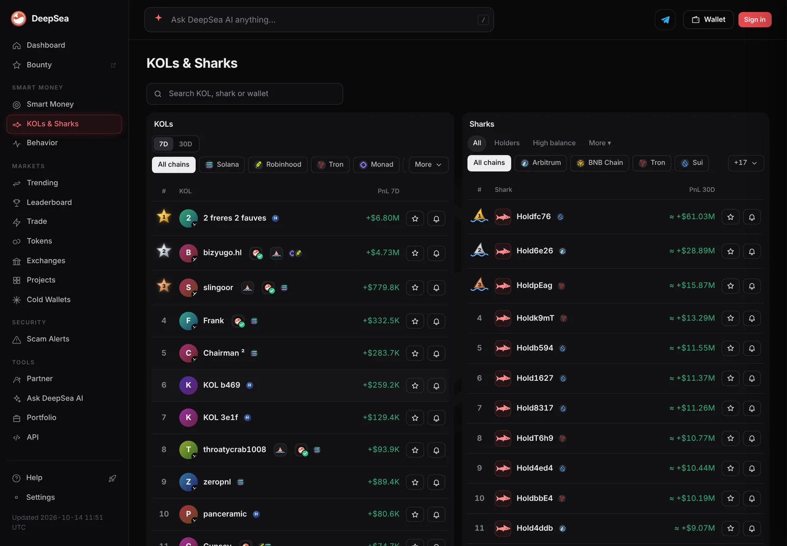
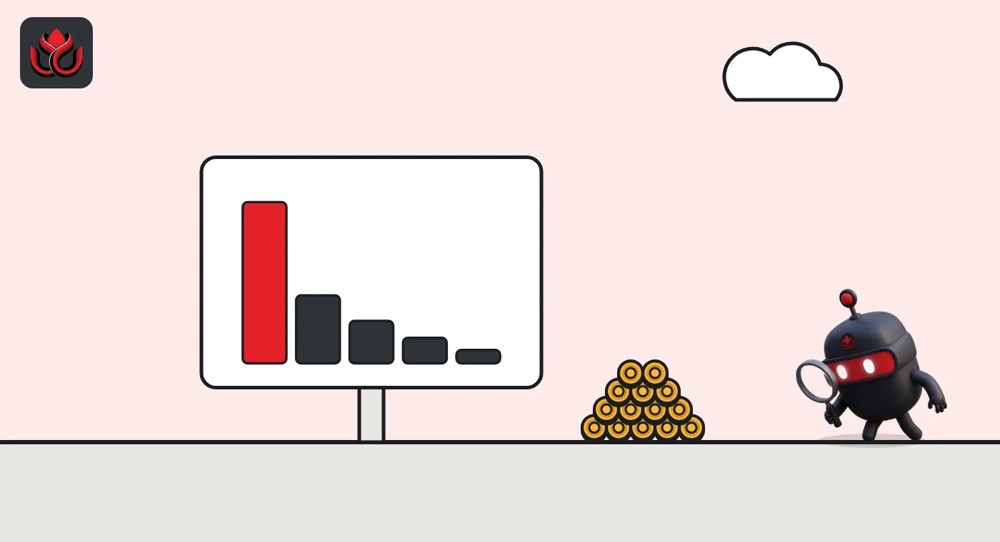

Sharks bought $3.05 million of WLD on Optimism in a day. One Monad wallet traded $15.7 million
DeepSea's live feed shows big wallets loading up on USD₮0 and WLD on Optimism, one wallet churning $15.7 million on Monad and a single $10 million Aave USDC exit on Arbitrum.
Key points
- In the 24 hours to 12:37 a.m. ET on November 4, 2026, sharks bought $3.26 million of USD₮0 on Optimism and sold only $106,801, DeepSea's live feed shows.
- On the same chain, 11 shark wallets bought $3.05 million of WLD and sold $1.89 million, about $1.16 million net bought.
- One Monad wallet bought $6.65 million and sold $9.03 million in 162 trades; one Arbitrum wallet sold $10 million of aArbUSDCn in a single trade.
 What DeepSea's data shows
What DeepSea's data shows
DeepSea's live feed adds up trades by wallets it tags as sharks (large, active traders) over the last 24 hours. LC Insight read it at 12:37 a.m. ET on November 4, 2026. DeepSea does not name these wallets, so neither do we.
Optimism led the buying. Eight shark wallets bought $3.26 million of USD₮0, a cross-chain version of Tether's dollar token, and sold just $106,801 in 49 trades. Eleven wallets bought $3.05 million of WLD (Worldcoin's token) and sold $1.89 million in 122 trades, leaving about $1.16 million net bought. OP itself was close to flat: $409,515 bought, $430,660 sold.
Monad was one wallet's show. It bought $6.65 million and sold $9.03 million across 162 trades, matching every shark trade DeepSea logged on the chain. The biggest pieces were WETH ($4.12 million bought, $4.21 million sold) and wstETH, a staked ether token ($1.30 million bought, $3.57 million sold).

Data: DeepSea (desea.io), checked November 4, 2026, 12:37 a.m. ET.
Berachain and Arbitrum: two big exits
On Berachain, a single shark wallet bought $1.04 million of USD₮0 and sold $2.32 million in 154 trades, about $1.28 million net sold.
The largest single item in the feed was on Arbitrum. One wallet sold $10 million of aArbUSDCn in one trade, with nothing bought. aArbUSDCn is the receipt token Aave gives people who deposit native USDC on Arbitrum, so this looks like $10 million leaving an Aave deposit. DeepSea does not show where the money went next.
The numbers
Net shark flow by token over 24 hours, from DeepSea's live feed. Positive means more bought than sold.
Shark net flow, 24 hours to 12:37 a.m. ET, November 4, 2026
US$ million
Source: DeepSea live feed, 24-hour aggregates, fetched November 4, 2026, 12:37 a.m. ET.

Prices
At 12:40 a.m. ET, CoinGecko showed WLD at $0.3800, up 2.9% in 24 hours. OP was at $0.1099 (up 2.0%), ether at $2,287.39 (up 1.8%), Monad's MON at $0.0184 (up 8.0%) and BERA at $0.1286 (down 1.5%).
Why it matters
Sharks move enough money to show where large traders are active right now. The Monad wallet's record is a caution: in DeepSea's 30-day realized profit and loss table (closed trades only), it stands at minus $1.12 million. Big and busy does not mean right.
LC Insight analysis
This section is our reading of the facts above, not a statement of fact.
- We think the Optimism USD₮0 buying is the cleaner signal: $3.26 million in with almost nothing out suggests dollars being parked on the chain, though the feed does not say what they are for.
- The Monad and Berachain numbers look like one wallet trading both sides many times. We would not read them as a bet on either chain.
- The $10 million Aave exit is the one to follow. That single trade was bigger than all the Optimism buying combined, and the feed does not show where it went.
What's next
- Whether the WLD buying on Optimism continues in the next 24 hours
- Where the $10 million that left Aave on Arbitrum lands
- The Monad wallet's next trades and its 30-day PnL
Disclaimer. This article is based on public information and the sources listed below as of the update time shown. It is for information only and is not investment, legal or tax advice. Figures may change as companies and authorities publish new data.
Sources
- DeepSea live feed, 24-hour shark aggregates (fetched November 4, 2026, 12:37 a.m. ET)
- DeepSea, KOLs and Sharks page (checked November 4, 2026)
- DeepSea live feed, 30-day realized PnL per tracked wallet (fetched November 4, 2026, 12:37 a.m. ET)
- CoinGecko, Worldcoin (WLD) price (checked November 4, 2026, 12:40 a.m. ET)
- CoinGecko, Optimism (OP) price (checked November 4, 2026, 12:40 a.m. ET)